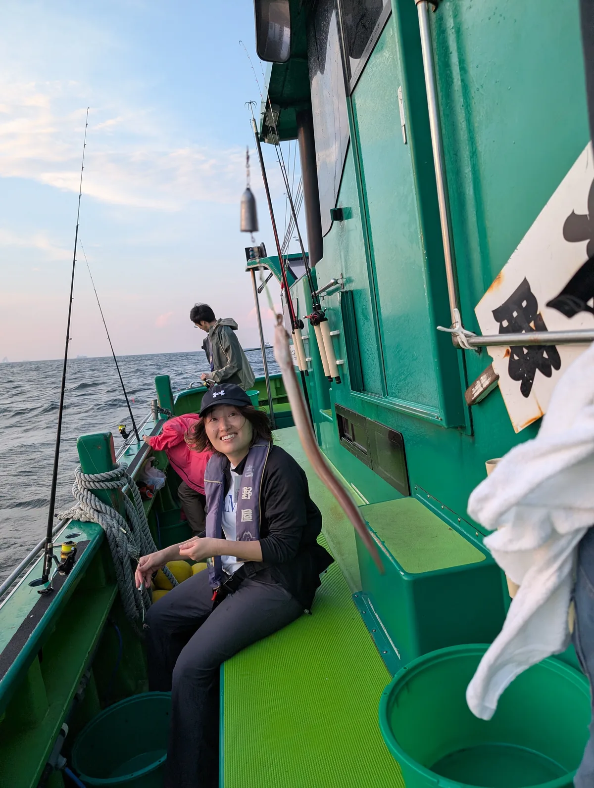
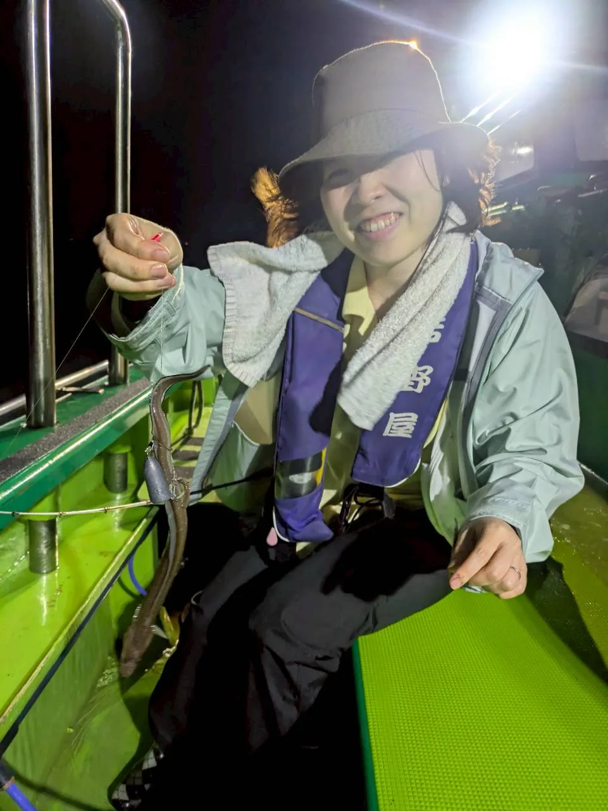
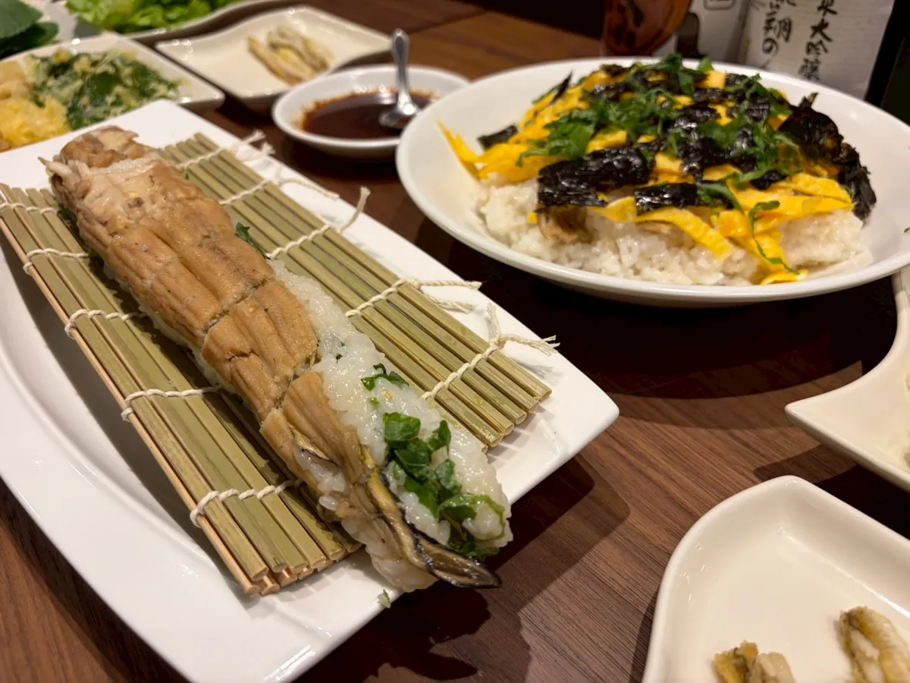
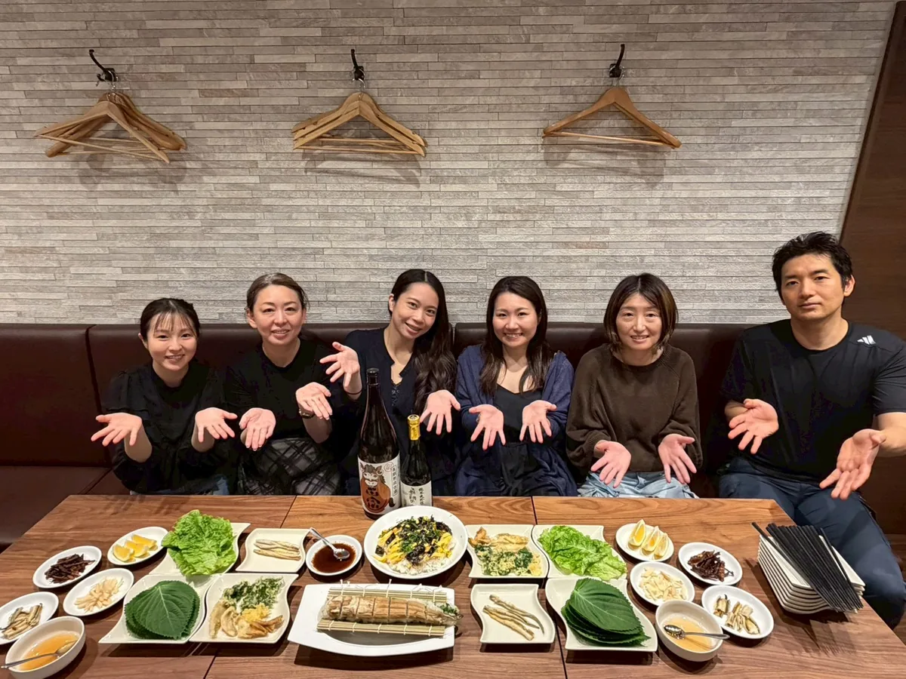

船の上で、全員が同じゲームに入る。
夕方に浦安を出港し、暗くなってからが本番。海の中は見えないから、竿先の小さな動きや手元の感覚を頼りに、何度も試します。
釣れる人も、なかなか釣れない人もいる。その差があるからこそ、隣の人のやり方を見たり、声をかけ合ったり、自然に場が温まっていきます。

海の上で試行錯誤し、仲間と盛り上がり、釣った魚を自分たちで味わう。食材の解像度も、人との距離も、いつもより一段深くなる時間です。

夕方に浦安を出港し、暗くなってからが本番。海の中は見えないから、竿先の小さな動きや手元の感覚を頼りに、何度も試します。
釣れる人も、なかなか釣れない人もいる。その差があるからこそ、隣の人のやり方を見たり、声をかけ合ったり、自然に場が温まっていきます。
今回の感想では、釣果以上に「夢中になった」「食材への見方が変わった」「また行きたい」という声が集まりました。
うまくいかないことを楽しむのも釣り。餌をつけて、工夫して、時間を忘れるくらい夢中になりました。
初参加メンバーの感想より
自分で釣れたときの感動がたまらない。普段食べている穴子が、どこから来るのかの解像度が上がりました。
参加メンバーの感想より
釣りそのものも楽しいけれど、同じ船の上で体験を共有できるのがLCAらしい。非日常で濃密な時間でした。
参加メンバーの感想より
難しい準備を一人で抱え込む必要はありません。釣り方を教わりながら、体験の入口から出口まで楽しめます。
船上の緊張感、夜景、釣れた瞬間、翌日の食事会。1回の企画で、記憶に残る場面がいくつも生まれました。






釣れるかどうかだけではなく、挑戦すること、仲間と同じ時間を過ごすこと、食材に触れることまで含めて楽しめるのがLCAの釣りコンテンツです。
次回の案内が出たら、初心者の方もぜひ前向きに検討してみてください。